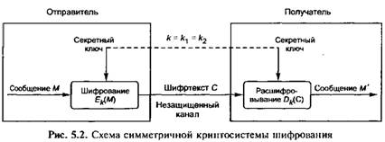

Исторически первыми появились симметричные криптографические системы. В симметричной криптосистеме шифрования используется один и тот же ключ для зашифровывания и расшифровывания информации. Это означает, что любой, кто имеет доступ к ключу шифрования, может расшифровать сообщение.
Для предотвращения раскрытия зашифрованной информации все ключи шифрования в симметричных криптосистемах должны держаться в секрете, поэтому симметричные криптосистемы называют криптосистемами с секретным ключом, так как ключ шифрования должен быть доступен только тем, кому предназначено сообщение.
Симметричное шифрование идеально подходит для шифрования информации «для себя», например, с целью предотвращения несанкционированного доступа к ней в отсутствие владельца. Это может быть как архивное шифрование выбранных файлов, так и прозрачное (автоматическое) шифрование целых логических или физических дисков. Обладая высокой скоростью шифрования, одноключевые криптосистемы позволяют решать многие важные задачи защиты информации. Однако автономное использование симметричных криптосистем в компьютерных сетях порождает проблему распределения ключей шифрования между пользователями.
Перед началом обмена зашифрованными данными необходимо обменяться секретными ключами со всеми адресатами. Передача секретного ключа симметричной криптосистемы не может быть осуществлена по общедоступным каналам связи, секретный ключ надо передавать отправителю и получателю по защищенному каналу. Для обеспечения эффективной защиты циркулирующих в сети сообщений необходимо огромное число часто меняющихся ключей (один ключ на каждую пару пользователей). При передаче ключей пользователям необходимо обеспечить конфиденциальность, подлинность и целостность ключей шифрования, что требует больших дополнительных затрат. Эти затраты связаны с необходимостью передачи секретных ключей по закрытым каналам связи или распределением таких ключей с помощью специальной службы доставки, например с помощью курьеров.
Проблема распределения секретных ключей при большом числе пользователей является весьма трудоемкой и сложной задачей. В сети на N пользователей необходимо распределить N(N- 1)/2 секретных ключей, т. е. число распределяемых секретных ключей растет по квадратичному закону с увеличением числа абонентов сети. В разделе «Управление криптоключами» рассматриваются методы, обеспечивающие защищенное распределение ключей абонентам сети.
Один из примеров таких шифров:
Магическими квадратами называются квадратные таблицы со вписанными в их клетки последовательными натуральными числами от 1, которые дают в сумме по каждому столбцу, каждой строке и каждой диагонали одно и то же число.
Подобные квадраты широко применялись для вписывания шифруемого текста по приведенной в них нумерации. Если потом выписать содержимое таблицы по строкам, то получалась шифровка перестановкой букв. На первый взгляд кажется, будто магических квадратов очень мало. Тем не менее, их число очень быстро возрастает с увеличением размера квадрата.
Mагические квадраты больших размеров могли быть хорошей основой для надежной системы шифрования того времени, потому что ручной перебор всех вариантов ключа для этого шифра был немыслим
В квадрат размером 4 на 4 вписывались числа от 1 до 16. Его магия состояла в том, что сумма чисел по строкам, столбцам и полным диагоналям равнялась одному и тому же числу — 34. Впервые эти квадраты появились в Китае, где им и была приписана некоторая «магическая сила».
| 16 | 3 | 2 | 13 |
| 5 | 10 | 11 | 8 |
| 9 | 6 | 7 | 12 |
| 4 | 15 | 14 | 1 |
Шифрование по магическому квадрату производилось следующим образом. Например, требуется зашифровать фразу: «ПриезжаюСегодня.». Буквы этой фразы вписываются последовательно в квадрат согласно записанным в них числам: позиция буквы в предложении соответствует порядковому числу. В пустые клетки ставится точка.
| 16. | 3 и | 2 р | 13 д |
| 5 з | 10 е | 11 г | 8 ю |
| 9 С | 6 ж | 7 а | 12 о |
| 4 е | 15 я | 14 н | 1 П |
После этого шифрованный текст записывается в строку (считывание производится слева направо, построчно): .ирдзегюСжаоеянП
При расшифровывании текст вписывается в квадрат, и открытый текст читается в последовательности чисел «магического квадрата». Программа должна генерировать «магические квадраты» и по ключу выбирать необходимый. Размер квадрата больше чем 3х3.
Существует множество (не менее двух десятков) алгоритмов симметричных шифров, существенными параметрами которых являются:
Для компенсации недостатков симметричного шифрования в настоящее время широко применяется комбинированная (гибридная)криптографическая схема, где с помощью асимметричного шифрования передаётся сеансовый ключ, используемый сторонами для обмена данными с помощью симметричного шифрования.
Важным недостатком симметричных шифров является невозможность их использования в механизмах формирования электронной цифровой подписи и сертификатов, так как ключ известен каждой стороне.